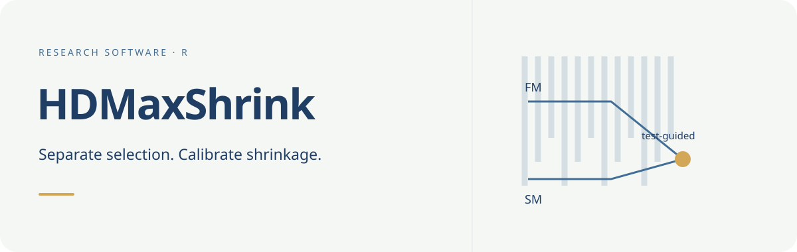

Documentation · Get started · Reference

Conceptual workflow illustration, not a performance comparison.
Methodology preprint: Max-Test-Calibrated Stein Shrinkage with Honest Submodel Selection in Ultra-High-Dimensional Regression (Bahadır Yüzbaşı, 2026; arXiv:2609.23070, stat.ME). The preprint includes supplementary material.
HDMaxShrink is a research package for pretest–Stein estimation in sparse linear models with `p\gg n`. It provides full-model (FM), submodel (SM), preliminary-test (PT), Stein-form (S), and positive-part (PS) estimates.
The current data-adaptive workflow combines independent-sample submodel selection with a Ridge full model and max-test-calibrated shrinkage. CPSS and post-selection refitting are established methods; the proposed contribution is their honest integration with an exact-null SVD submodel, a dual-Ridge full endpoint, and a conditionally calibrated max-partial-`t` PT/Stein family. Classical James–Stein dominance is not asserted.
Start with installation and the self-contained example. The current workflow, additional square-root-LASSO workflow, and retained research modes are described separately below.
Install and try
Source repository: https://github.com/byuzbasi/HDMaxShrink.
# Install remotes first if it is not already available.
install.packages("remotes")
remotes::install_github("byuzbasi/HDMaxShrink", upgrade = "never")R >= 4.1.0 and a working C++17 toolchain are required. The package links to R’s LAPACK/BLAS and uses RcppArmadillo. The optional CPSS-MCP selector also requires grpreg, listed under Suggests; install it separately if needed.
Run the small, self-contained example after installation:
source(system.file("examples", "quickstart.R", package = "HDMaxShrink"))The example generates 1,000 predictors with independent selection and analysis samples of 100 observations each, plus 200 untouched test observations. It prints the selected submodel, coefficient counts, test diagnostics and FM/SM/PT/S/PS results. In an interactive R session it also draws a three-panel figure showing selection frequencies, held-out errors and coefficient estimates. It is one toy dataset, not a reproduction of the manuscript’s production study. The complete script is quickstart.R; the steps below can also be run in order.
Current workflow: CPSS-guided submodel and Ridge full model

One fixed-seed example, from selection to held-out evaluation. The steps below reproduce these results; no production study is needed to try the workflow.
1. Generate data with known coefficients
The design entries and errors below are independent standard Gaussian draws. Only the first ten coefficients are nonzero; the generating intercept is zero. Separate data are used for selection, estimation and evaluation. The true coefficient vector is used for data generation and scoring, never supplied to the selector or estimator.
library(HDMaxShrink)
set.seed(20260914)
n <- 100L
p <- 1000L
n_test <- 200L
beta <- c(1.50, 1.25, 1.00, 0.90, 0.80,
-1.25, -1.00, -0.90, 0.75, -0.75, rep(0, p - 10L))
make_sample <- function(rows = n) {
X <- matrix(rnorm(rows * p), nrow = rows, ncol = p)
colnames(X) <- paste0("x", seq_len(p))
list(X = X, y = drop(X %*% beta + rnorm(rows)))
}
selection_data <- make_sample()
analysis_data <- make_sample()
test_data <- make_sample(n_test)2. Learn the submodel from selection data only
Assume that only x1 and x2 are required predictors known in advance. CPSS can add predictors from the remaining 998 columns. The other eight signals are not given to it, and successful support recovery is not assumed. This small demonstration uses 20 complementary pairs, a base-selection budget of 10 optional variables and a stability threshold of 0.60.
selection <- cpss_select_core(
selection_data$X, selection_data$y,
selector = "lasso", mandatory_core = 1:2,
complementary_pairs = 20L, base_selection_size = 10L,
stability_threshold = 0.60, path_points = 30L, seed = 20260915L
)
core_table <- selection$stability_table[
selection$stability_table$selected_for_core,
c("feature", "core_role", "stability_frequency"), drop = FALSE
]
print(core_table, row.names = FALSE)In the reference run, the selected core is x1, x2, x6. The first two are mandatory, with NA selection frequencies; x6 is a CPSS extension with frequency 0.650. Thus the selected submodel still omits seven true signals.
How CPSS chooses the variables
Complementary pairs stability selection (CPSS) is an established procedure of Shah and Samworth (2013), building on Meinshausen and Buehlmann (2010). Here it builds the submodel before estimation and testing on independent data. It is not variable selection by the final Ridge fit.
- Separate prior information from selection. The mandatory set `A_0=\{1,2\}` is fixed before looking at the data. In this Gaussian example, the eligible optional candidates are `\mathcal C=\{3,\ldots,1000\}`. Only the selection sample is supplied to CPSS; neither the true coefficients nor the analysis/test responses are used.
- Form complementary half-samples. Each of 20 random splits divides the 100 selection observations into two disjoint halves of 50. Fit a base selector on both halves, giving 40 fits. The same observations recur across pairs: these are not 40 independent datasets.
- Select an optional extension in each half. Center and project the response and optional columns off the mandatory design within that half, then fit a 30-point LASSO path. The implemented rule takes the largest nonempty support with at most 10 optional predictors; ties use the larger penalty. If no admissible nonempty support exists, that half selects none. This is a size-budget rule, not cross-validation. This selection-stage residualization does not split or partially penalize the final Ridge FM.
- Count selections and threshold. Keep an optional predictor if it occurs in at least 60% of the 40 fits, and add it to the mandatory set. There is no top-k fallback and no requirement to end with 10 predictors.
Specifically, let `K=20` be the number of complementary pairs, `S_{k,h}\subseteq\mathcal C` the optional set selected in half `h\in\{1,2\}` of pair `k`, and `\mathbf 1\{\cdot\}` the indicator of an event. The empirical selection frequency counts how often each eligible optional predictor is retained:
\widehat\pi_j=\frac{1}{2K}\sum_{k=1}^{K}
\left[\mathbf 1\{j\in S_{k,1}\}+\mathbf 1\{j\in S_{k,2}\}\right],
\qquad j\in\mathcal C.With the prespecified threshold `\tau=0.60`, the submodel index set is
\widehat A=A_0\cup\{j\in\mathcal C:\widehat\pi_j\ge\tau\},
\qquad p_1=|\widehat A|,\qquad q=p-p_1.This union retains prior predictors even if no optional predictor passes. Here x6 passes with 26/40 selections; the minimum is 24/40. Mandatory predictors x1 and x2 have frequency NA, not an estimated frequency of one. The realized submodel size is therefore 3, not 10. The 10-variable budget applies separately to each half-fit. Inspect the ranking and counts with:
optional_table <- selection$stability_table[
is.finite(selection$stability_table$stability_frequency), , drop = FALSE
]
optional_table$half_sample_selections <- as.integer(round(
optional_table$stability_frequency * 2L * selection$complementary_pairs
))
head(optional_table[, c("feature", "half_sample_selections",
"stability_frequency", "selected_for_core")], 10L)A frequency is not a p-value or a posterior probability that a coefficient is nonzero. The threshold is a selection-design choice, not a universal optimum; raising it generally makes the extension smaller, and lowering it can admit less stable predictors. Do not choose it using held-out test errors. The package’s pfer_upper_bound_mb is a Meinshausen–Buehlmann-type expression requiring additional assumptions, not an automatic false-discovery-rate guarantee. CPSS does not make the resulting SM an oracle: this example misses seven signals, and its selected null is false. Independent selection enables conditional inference when the selected null is true; it does not make every selected null true.
CPSS is the repeated-selection wrapper, not the base penalty itself. selector = "lasso" uses LASSO inside each half; the optional selector = "mcp" sensitivity uses singleton-group MCP via grpreg with the same frequency-screen construction. Neither choice guarantees the best submodel. The displayed example uses LASSO throughout the selection stage.
3. Fit Ridge FM, the exact-null SM, and the shrinkage estimators
Use the independent analysis sample. The Ridge penalty 0.25 is fixed for this illustration, not selected using test errors. The package centers and RMS-scales the analysis predictors and response internally, then returns coefficients and predictions on the original scale. Do not scale the three samples jointly. The conditional test uses 199 Gaussian draws and inverse-null-moment calibration.
fit <- fit_cpss_ridge_shrinkage(
analysis_data$X, analysis_data$y,
selection = selection,
ridge_lambda = 0.25,
bootstrap_B = 199L, bootstrap_seed = 20260916L,
shrinkage_calibration = "inverse_moment"
)
methods <- c("FM", "SM", "PT", "S", "PS")
estimates <- vapply(methods, function(m) coef(fit, method = m), numeric(p + 1L))Ridge FM fits all 1,000 predictors jointly; SM is refitted using only the three selected predictors and zero-padded to length 1,000. The first element returned by coef() is the original-scale intercept, not a selected predictor. Separate it when counting nonzero slopes:
coefficient_summary <- data.frame(
Method = methods,
Slopes_returned = p,
Nonzero_slopes = colSums(abs(estimates[-1L, , drop = FALSE]) > 1e-8),
Intercept = unname(estimates[1L, ]), row.names = NULL
)
print(coefficient_summary, row.names = FALSE, digits = 5)In this run Ridge FM has 1,000 nonzero slopes and SM has three. These are numerical counts at tolerance 1e-8, not claims of statistical significance.
4. Inspect the test and interpolation weights
Here p1 is the selected submodel size and q is the number of excluded coordinates. The weight below multiplies the difference FM minus SM: zero gives SM and one gives FM. The S weight can be negative; PS truncates it at zero. Test rejection makes PT equal FM but does not force PS to equal FM.
test_summary <- data.frame(
n = n, p = p, p1 = length(fit$core_set), q = length(fit$tested_set),
T_max = fit$inference$statistic, p_value = fit$inference$p_value,
reject = fit$reject, kappa = fit$inference$shrinkage_calibration
)
print(test_summary, row.names = FALSE, digits = 5)
full_weight <- c(FM = 1, SM = 0, PT = as.numeric(fit$reject),
S = fit$shrinkage$stein_weight,
PS = fit$shrinkage$positive_weight)The reference run gives p1 = 3, q = 997, T_max = 5.7893, p_value = 0.005 and kappa = 12.5100. The null is rejected at 0.05. The Monte Carlo p-value has resolution 1/200 in this deliberately small example.
5. Evaluate once on untouched test data
Coefficient squared loss sums the squared errors over all 1,000 slopes and excludes the fitted intercept. It is a realized loss, not a Monte Carlo estimate of coefficient MSE. Test MSE averages squared prediction errors over the 200 independent test observations; predictions include the back-transformed intercept. All five methods use the same test rows.
predictions <- vapply(methods, function(m) {
predict(fit, newdata = test_data$X, method = m)
}, numeric(n_test))
results_table <- data.frame(
Method = methods,
Full_weight = unname(full_weight[methods]),
Coefficient_loss = colSums((estimates[-1L, , drop = FALSE] - beta)^2),
Test_MSE = colMeans((predictions - test_data$y)^2),
row.names = NULL
)
print(results_table, row.names = FALSE, digits = 5)Reference output from HDMaxShrink 0.6.2, R 4.6.0 and glmnet 5.0:
| Method | FM weight | Coefficient squared loss | Test MSE |
|---|---|---|---|
| FM | 1.0000 | 9.8118 | 11.0448 |
| SM | 0.0000 | 5.5443 | 6.8786 |
| PT | 1.0000 | 9.8118 | 11.0448 |
| S | 0.6267 | 7.0017 | 8.3888 |
| PS | 0.6267 | 7.0017 | 8.3888 |
Sourcing the complete quickstart.R defines plot_quickstart(), which draws this three-panel chart. It is called automatically in an interactive session and can be called explicitly afterwards; it does not write a file. The chart and table come from the same run. Panel A shows the top ten optional candidates ranked on selection data only; mandatory predictors are identified separately. Panel B compares all five held-out errors. Panel C shows the first 20 slopes, with the true-zero region shaded. Duplicate curves are labelled FM = PT and S = PS only because they coincide in this draw.
SM has the lowest realized error here despite omitting signals: rejecting an exact restriction is not a prediction-risk ranking. PT equals FM because the test rejects; S and PS coincide because the S weight is positive. These numbers illustrate the workflow, not support-recovery guarantees, uniform dominance or a general performance ranking. No seed search or test-based tuning was used. Results can differ across software versions; the small CPSS and Gaussian-draw budgets are demonstration settings, not the paper’s numerical-study settings.
Interpretation and assumptions
Mandatory variables are outside the optional-candidate CPSS frequency and PFER (expected number of false selections) family. The steps above describe how the optional extension is constructed; they do not claim a new CPSS algorithm. The proposed method combines this independently selected submodel with the full-model endpoint and a max-test-calibrated shrinkage family.
FM estimates all columns of `X` jointly by direct dual Ridge. SM is recomputed only on `X_{\widehat A}` with an economy-SVD Moore–Penrose operator and sets every complementary coefficient exactly to zero. The null test uses the exact-null SM residual; Ridge bias never calibrates the test. Conditional finite-sample exactness requires that selection be independent of the analysis response and that the selected null is true, in addition to iid homoskedastic Gaussian errors. CPSS–MCP is reported as sensitivity-only when used. Singleton groups make its group MCP penalty the ordinary coordinatewise MCP penalty. The grpreg path does not expose a local-convexity index, so the backward-compatible local-convexity field is NA and no such claim is made.
At thresholds above one half the package records the usual stability-selection bound together with its assumptions. A threshold at or below one half is labelled an exploratory frequency screen and receives no PFER claim.
Methodological foundations include Meinshausen and Buehlmann (2010, doi:10.1111/j.1467-9868.2010.00740.x), Shah and Samworth (2013, doi:10.1111/j.1467-9868.2011.01034.x), Belloni and Chernozhukov (2013, doi:10.3150/11-BEJ410), and Dufour (2006, doi:10.1016/j.jeconom.2005.06.007).
Additional workflow: prespecified-core square-root LASSO
The package also retains the prespecified-core square-root-LASSO workflow. This is a separate full-model endpoint, not the Ridge fit described above. For this workflow, write the linear model and the prespecified restriction as
y=X_A\beta_A+X_B\beta_B+\varepsilon,\qquad
H_0:\beta_B=0_q,where the prespecified core has `p_1=|A|<n` and the tested block may have `q=|B|\gg n`. Within each training fit, define
X^{s}_{ij}=\frac{X_{ij}-\bar X_j}{s_j},\qquad
y_i^s=\frac{y_i-\bar y}{s_y},where `s_j^2=n^{-1}\sum_i(X_{ij}-\bar X_j)^2` and `s_y^2=n^{-1}\sum_i(y_i-\bar y)^2`. Its full-model endpoint is one joint all-predictor square-root LASSO:
\widehat b^{FM}\in\arg\min_{b\in\mathbb R^p}
\left\{
\frac{\|y^s-X^sb\|_2}{\sqrt n}
+\lambda\sum_{j=1}^{p}\omega_j|b_j|
\right\},\qquad \omega_j>0.All `p` coordinates are estimated together and penalized; the core/tested partition does not enter the FM optimization. The standardized intercept is exactly zero. Returned coefficients and predictions are transformed back by
\widehat\beta_j^{FM}=\frac{s_y}{s_j}\widehat b_j^{FM},\qquad
\widehat\alpha^{FM}=\bar y-\bar X^\top\widehat\beta^{FM}.The submodel endpoint is a fresh low-dimensional refit under the exact null:
\widehat b^{SM}=((X_A^s)^+y^s,0_q).Thus SM uses all observations but only the prespecified `X_A` predictors and sets the `X_B` coefficients to zero. It does not copy the core coordinates from FM, and it is not supplied with the true active set. The core pseudoinverse is computed from a checked economy SVD; no OLS Gram inverse exists or is assumed. Its coefficients and intercept are back-transformed by the same training-fit scaling rule.
Max-test calibration and shrinkage
For the Gaussian-iid design, the default test uses the exact-null residual. Let `M_A=I-X_A^s(X_A^s)^+`, `r_A=M_Ay^s`, `d=n-1-\mathrm{rank}(X_A^s)`, and `z_j=M_AX^s_{B,j}`. Then
T_{\mathrm{score}}=
\max_{j\in B}\frac{|z_j^\top r_A|}
{\|z_j\|_2\sqrt{\|r_A\|_2^2/d}}.The reported maximum partial-t statistic is the monotone transform
T_{\max,t}=
\sqrt{\frac{(d-1)T_{\mathrm{score}}^2}
{d-T_{\mathrm{score}}^2}}.Gaussian draws are centered and projected off the same core, and the observed and simulated maxima receive the same transformation. Thus the finite-draw Monte Carlo p-value is invariant to the transformation. There is no direct chi-square approximation, joint partial-F claim, or `q\times q` covariance inverse. With
\widehat\kappa=
\left\{\frac1B\sum_{b=1}^B(T_{\max,t}^{*(b)})^{-2}\right\}^{-1},the default estimators are
\widehat\beta^{PT}
=\widehat\beta^{SM}
+\mathbf 1\{T_{\max,t}>c^*_{1-\alpha}\}
(\widehat\beta^{FM}-\widehat\beta^{SM}),\widehat\beta^{S}
=\widehat\beta^{SM}
+\left(1-\frac{\widehat\kappa}
{T_{\max,t}^2\vee\varepsilon}\right)
(\widehat\beta^{FM}-\widehat\beta^{SM}),\widehat\beta^{PS}
=\widehat\beta^{SM}
+\left[1-\frac{\widehat\kappa}
{T_{\max,t}^2\vee\varepsilon}\right]_+
(\widehat\beta^{FM}-\widehat\beta^{SM}).The max-calibrated Stein family is a research proposal. Classical James–Stein dominance is not asserted. The legacy residual-multiplier test and second-moment calibration remain available explicitly with test_calibration = "residual_multiplier" and shrinkage_calibration = "second_moment".
Prespecified-core square-root-LASSO example
Separate endpoint: square-root LASSO can set slopes to zero (not the Ridge demo above)
This retained example deliberately keeps its original seed, coefficients and default penalty. A full-model fit considers every predictor; with an L1 penalty it need not retain every predictor. The legacy function name does not select the endpoint: the explicit full_endpoint argument below does.
library(HDMaxShrink)
set.seed(1)
n <- 100
p <- 1000
p1 <- 20
X <- matrix(rnorm(n * p), n, p)
beta <- numeric(p)
core_pattern <- c(
1.50, 1.25, 1.00, 0.90, 0.80,
-1.25, -1.00, -0.90, 0.75, -0.75
)
beta[1:20] <- rep(core_pattern, 2)
y <- drop(X %*% beta + rnorm(n))
sqrt_fit <- fit_partial_sqrt_lasso_shrinkage(
X,
y,
core_set = 1:p1,
tested_set = (p1 + 1):p,
full_endpoint = "all_x_square_root_lasso",
all_x_penalty_loadings = rep(1, p),
standardize_y = TRUE,
bootstrap_B = 499,
bootstrap_seed = 20260820
)
print(sqrt_fit)
sqrt_fm <- coef(sqrt_fit, method = "FM")
data.frame(
Input_predictors = ncol(X),
Nonzero_slopes = sum(abs(sqrt_fm[-1L]) > 1e-8),
Intercept = unname(sqrt_fm[1L])
)
coef(sqrt_fit, method = "SM")
coef(sqrt_fit, method = "PS")With the reference versions above, this particular example gives zero nonzero FM slopes, not one selected predictor: its nonzero intercept must not be counted as a variable. The default penalty is about 0.42888, above the zero-slope KKT threshold of about 0.39266 on the standardized data. Thus the zero-slope solution satisfies the optimality condition; it is not a solver failure. This does not describe the Ridge FM in the main example. No penalty or seed was changed to make the output look more favorable.
Here all 20 coordinates in the prespecified core are active. Under the exact null, SM is the intended correct-restriction benchmark; the estimator is not given the support separately and only receives the scientifically specified core/tested partition.
The full-model endpoint does not require a diagonal population-precision assertion. Conditional on fixed `X`, the exact-null max-partial-`t` test needs a prespecified core, nondegenerate residualized tested directions, and homoskedastic Gaussian errors; it does not require independent columns of `X`.
Risk convention
The accompanying simulations use the total coefficient loss
L(\widehat\beta,\beta)=\|\widehat\beta-\beta\|_2^2and
\mathrm{RPE}(m)=
\frac{\mathrm{MSE}(\widehat\beta^{FM})}
{\mathrm{MSE}(\widehat\beta^{m})}.With a fixed Ridge penalty and full-vector coefficient loss, SM RPE need not tend to zero. Both Ridge FM and a misspecified SM can have quadratic-in-signal loss because Ridge retains null-space bias when `p>n`; SM RPE then approaches a positive design-specific plateau. The max-Stein estimators should still approach FM and hence RPE one when their data-dependent weight approaches one. A sparse LASSO full-model sensitivity may recover a strong sparse departure and produce an SM RPE close to zero, but it is a different FM endpoint with additional assumptions.
Retained research modes
-
fit_ridge_mcp_shrinkage()retains the version 0.2.0 Ridge–MCP sensitivity framework. -
fit_hd_shrinkage()retains the earlier square-root-LASSO restriction projection and small-`q` Wald branch for reproducibility.
The thresholded partial-debiased and profiled partial square-root-LASSO endpoints are also retained as explicit backward-compatible modes. The mandatory-core CPSS–SM/Ridge workflow is the version 0.6.0 data-adaptive extension; the prespecified-core square-root-LASSO workflow and earlier modes remain available for theory, sensitivity analysis, and reproducibility.
Version and reproducibility
Version 0.6.2 preserves the version 0.6.1 statistical API and uses singleton-group grpreg MCP for the optional CPSS–MCP sensitivity path. Version 0.6.1 added portable linkage for the compiled numerical kernels, and version 0.6.0 added a reusable mandatory-core conditional CPSS workflow.
This public source snapshot retains the frozen 0.6.2 numerical implementation and tests. GitHub metadata, installation guidance and a small example were added for distribution; the original study’s versioned source archives remain unchanged. This repository contains the R package, not raw data, manuscript submission files or the full study’s execution checkpoints.
The reported DepMap application used HDMaxShrink 0.6.0 with ncvreg 3.16.0; the fixed-core simulation used HDMaxShrink 0.6.1; and the honest-selection audit used HDMaxShrink 0.6.2 with grpreg 3.6.0. Reproduce each study with its recorded frozen release and dependencies. In particular, the historical DepMap local-convexity diagnostic is not an output of the current grpreg backend. Preserving an API does not imply identical numerical paths across different MCP solvers.
Documentation and support
For function arguments and examples, use R help, such as ?fit_cpss_ridge_shrinkage, or read the package vignette. Report software problems through GitHub Issues. Use citation("HDMaxShrink") for the software reference. The package is licensed under GPL version 3 or later, as declared in DESCRIPTION.
Cite the method and software
For the methodological framework, cite:
Yüzbaşı, B. (2026). Max-Test-Calibrated Stein Shrinkage with Honest Submodel Selection in Ultra-High-Dimensional Regression. arXiv:2609.23070 [stat.ME]. Preprint.
@misc{yuzbasi2026max,
author = {Y{\"u}zba{\c{s}}{\i}, Bahad{\i}r},
title = {{Max-Test-Calibrated Stein Shrinkage with Honest Submodel Selection in Ultra-High-Dimensional Regression}},
year = {2026},
eprint = {2609.23070},
archivePrefix = {arXiv},
primaryClass = {stat.ME},
doi = {10.48550/arXiv.2609.23070},
url = {https://arxiv.org/abs/2609.23070}
}Use citation("HDMaxShrink") to obtain both the software reference and the methodology-preprint reference. Cite the package version used in your analysis; the preprint is not a journal-publication record.